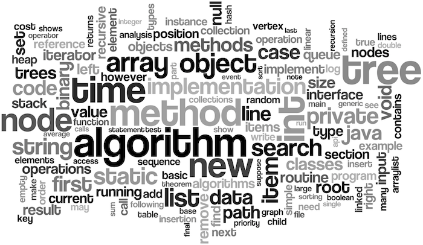

 List는 데이터를 순차적으로 저장하므로 선형 구조(한 줄로 계속 되며, 데이터가 끊어지지 않음)이다.
스택이란…?
스택은 후입선출(LIFO, Last In First Out)의 구조를 가지는 자료구조이다. 기본적으로 배열이 스택의 구조로 이루어져있고, CPU가 연산을 할 때 연산자에 우선순위 메겨놓고 연산할 때도 스택을 이용하는 것으로 알고 있다. 그리고 프로그래밍을 배우다 보면 콜스택이라고 해서 함수의 실행 컨텍스트(EC, Execution Context)가 계속해서 쌓이는데 그 콜스택도 스택이라는 자료구조를 이용하고 있다. 몇 번째에다가 데이터를 넣어야하고, 몇 번째에서 데이터를 빼야할지에 대한 인덱스(포인터)를 가지고 있어야한다. 데이터 처리를 먼저하고 인덱스를 바꾸는 경우와 인덱스를 바꾸고 데이터를 처리하는 방식이 있다. 기본적으로 push()라는 메소드로 데이터를 넣고 pop()라는 메소드로 데이터를 뺀다.
만들어보자!
아직은 쉬운 자료구조라 그런지 만드는데 재미있었다 ㅎㅎ Array도 스택 구조로 이루어져있는 만큼 자바로 구현하면 ArrayList를 상속 받으면 쉽게 구현이 가능하다. 또한 기존에 만들었던 스택의 크기보다 더 많은 데이터를 삽입할 경우에는 더 큰 스택을 만들고 기존의 스택을 복사해야하는데 이 때도 자바의 내장 API를 사용하면 매우 쉽게 구현이 가능하다. 하지만 자료구조를 만드는 것은 알고리즘을 향상 시키기 위한 목적도 있기 때문에 최대한 이런 내장 API나 라이브러리들은 배제하고 만들어보았다.
1
2
3
4
5
6
7
8
9
10
11
12
13
14
15
16
17
18
19
20
21
22
23
24
25
26
27
28
29
30
31
32
33
34
35
36
37
38
39
40
41
42
43
44
45
46
47
48
49
50
51
52
53
54
55
56
57
58
59
60
61
62
63
64
65
66
67
68
69
70
71
72
73
74
75
76
77
78
79
classStack{
Object[] objs;
int idx = 0; // 현재 스택이 몇 번째 인덱스를 가리키고 있는지(넣고 올린다, 올리고 넣는 게 아니라)
publicStack(){
this(10); // 기본적으로 10개를 만들어주자, 너무 작게 만들면 복사하는 처리 비용이 많이 들테니...
}
publicStack(int i){
if(i < 1) thrownew ArrayIndexOutOfBoundsException("스택의 크기는 자연수여야합니다!");
objs = new Object[i];
}
voidpush(Object obj){
int len = objs.length;
// 꽉 차지 않았다면
if(idx != len) objs[idx++] = obj;
else { // 꽉 찼으면
Object[] tmpObjs = new Object[len+10]; // 나중에 또 금방 복사하지 않게 적절하게 큰 배열을 만들자.
for(int i=0; i<len; i++) tmpObjs[i] = objs[i];
tmpObjs[idx++] = obj;
objs = tmpObjs;
}
}
Object pop(){
if(idx == 0) thrownew ArrayIndexOutOfBoundsException("스택에 들어와있는 값이 없습니다!");
Object obj = objs[--idx];
objs[idx] = null;
return obj;
}
intsize(){
return objs.length;
}
voidsetSize(int i){
int len = objs.length;
int copyLen = i > len ? len : i; // 몇 개를 복사해야할지
if(i < 1) thrownew ArrayIndexOutOfBoundsException("스택의 크기는 자연수여야합니다!");